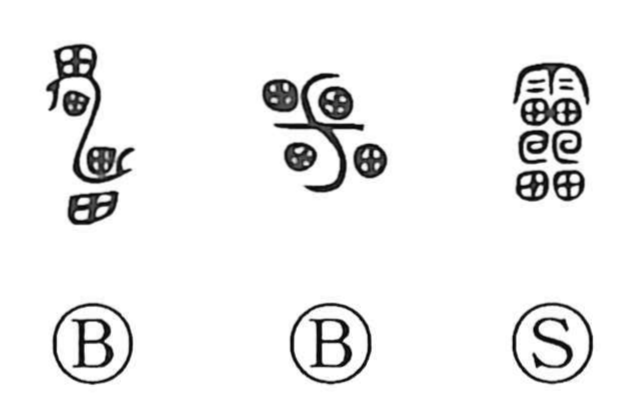

雷

Kun: kaminari, ikazuchi | On: rai
thunder
Explanation
The early form of 雷 pictures lightning radiating outward. Its repeated shapes became 畾 and the fuller 𤳳. The later 靁 adds 雨, the element used for weather phenomena; the modern 雷 compresses the lower design into a single 田.
The graph names thunder through the flashing lightning that accompanies it. The sound and force of the storm also give senses of something sudden, violent, or awe-inspiring. Thunder was compared with the beating of drums, and Han-period images show a thunder god striking them. This supplies a vivid expression of the same power: the spreading flash in the old graph and the rolling sound of the storm.